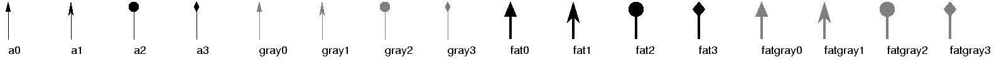

| PyChart |
| PyChart |
This class supports the following attributes:
The color of the arrow head.
The length of the arrow head.
The value of 0 draws a triangular arrow head. The value of 1 draws a swallow-tail arrow head. The value of 2 draws a circular head. The value of 3 draws a diamond-shaped head.
Line style.
The width of the arrow head.
An arrow object exports a single public method, draw.
| points) |

| PyChart |